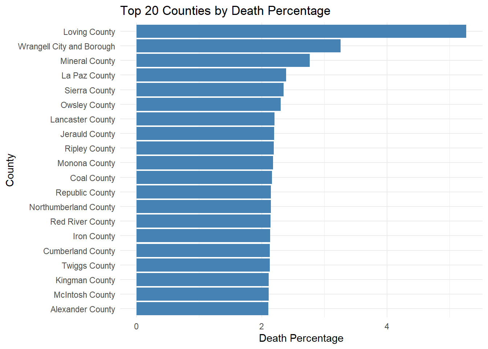
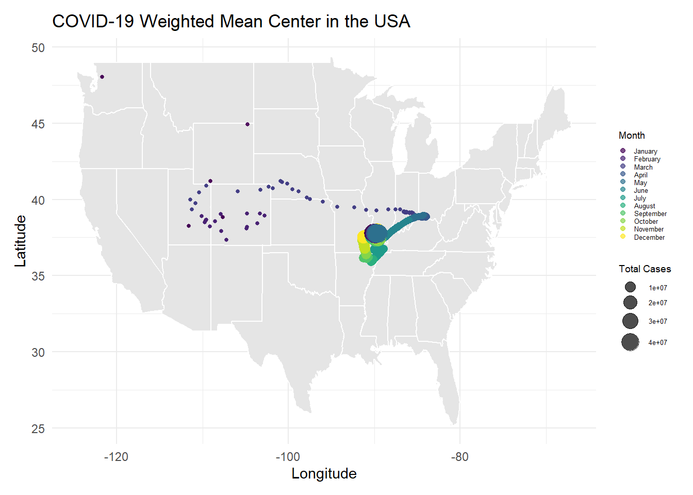
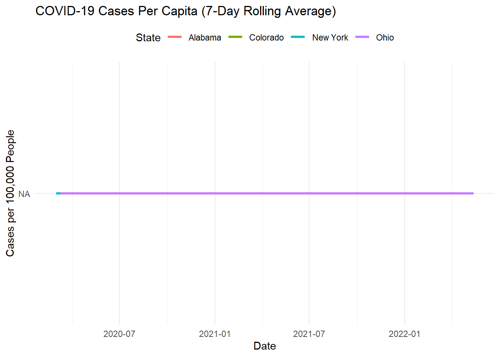

# Question 1
# answer: Having easy access to historical and real-time environmnetal data shapes our understanding of climate trends, resource management, and public health by giving the public and scientists/researches the ability to analyze and study trends and patterns as well as create predictions for the future. When this data disappears or becomes inaccessible, it could create challenges for the public and scientists/researchers to understand what is happening in the real world.Lab 3: COVID-19
Ecosystem Science and Sustainability 330
# Question 2
my.date <- as.Date("2022-01-01")
my.state <- "Colorado"
colorado_data <- covid_data %>%
dplyr::filter(state == my.state) %>%
dplyr::arrange(county, date)
colorado_data <- colorado_data %>%
dplyr::group_by(county) %>%
dplyr::mutate(new_cases = cases - dplyr::lag(cases, default = first(cases)),
new_deaths = deaths - dplyr::lag(deaths, default = first(deaths))) %>%
dplyr::ungroup()
latest_data <- colorado_data %>%
dplyr::filter(date == my.date)
top_cumulative_cases <- latest_data %>%
filter(date == my.date) %>%
slice_max(cases, n = 5) %>%
select(Date = date, County = county, Cases = cases) %>%
flextable() %>%
set_caption("Most Cumulative Cases")
top_cumulative_cases Date | County | Cases |
|---|---|---|
2022-01-01 | El Paso | 125,644 |
2022-01-01 | Denver | 117,579 |
2022-01-01 | Arapahoe | 103,551 |
2022-01-01 | Adams | 95,323 |
2022-01-01 | Jefferson | 82,540 |
top_new_cases <- latest_data %>%
filter(date == my.date) %>%
slice_max(cases, n = 5) %>%
select(Date = date, County = county, Cases = new_cases) %>%
flextable() %>%
set_caption("Most New Cases")
top_new_casesDate | County | Cases |
|---|---|---|
2022-01-01 | El Paso | 0 |
2022-01-01 | Denver | 0 |
2022-01-01 | Arapahoe | 0 |
2022-01-01 | Adams | 0 |
2022-01-01 | Jefferson | 0 |
safe_counties <- latest_data %>%
filter(new_cases < 10) %>%
select(county)
num_safe_counties <- nrow(safe_counties)
safe_counties %>%
flextable() %>%
set_caption("Counties with Low Case Counts in Colorado")county |
|---|
Adams |
Alamosa |
Arapahoe |
Archuleta |
Baca |
Bent |
Boulder |
Broomfield |
Chaffee |
Cheyenne |
Clear Creek |
Conejos |
Costilla |
Crowley |
Custer |
Delta |
Denver |
Dolores |
Douglas |
Eagle |
El Paso |
Elbert |
Fremont |
Garfield |
Gilpin |
Grand |
Gunnison |
Hinsdale |
Huerfano |
Jackson |
Jefferson |
Kiowa |
Kit Carson |
La Plata |
Lake |
Larimer |
Las Animas |
Lincoln |
Logan |
Mesa |
Mineral |
Moffat |
Montezuma |
Montrose |
Morgan |
Otero |
Ouray |
Park |
Phillips |
Pitkin |
Prowers |
Pueblo |
Rio Blanco |
Rio Grande |
Routt |
Saguache |
San Juan |
San Miguel |
Sedgwick |
Summit |
Teller |
Washington |
Weld |
Yuma |
total_new_cases <- sum(latest_data$new_cases, na.rm = TRUE)
total_cumulative_cases <- sum(latest_data$cases, na.rm = TRUE)
# answer: A text report describing the total new cases, total cumulative cases, and number of safe counties# Question 3
population_data <- read_csv("https://www2.census.gov/programs-surveys/popest/datasets/2020-2021/counties/totals/co-est2021-alldata.csv")Rows: 3194 Columns: 35
── Column specification ────────────────────────────────────────────────────────
Delimiter: ","
chr (5): SUMLEV, STATE, COUNTY, STNAME, CTYNAME
dbl (30): REGION, DIVISION, ESTIMATESBASE2020, POPESTIMATE2020, POPESTIMATE2...
ℹ Use `spec()` to retrieve the full column specification for this data.
ℹ Specify the column types or set `show_col_types = FALSE` to quiet this message.covid_data <- read_csv("https://raw.githubusercontent.com/nytimes/covid-19-data/master/us-counties.csv")Rows: 2502832 Columns: 6
── Column specification ────────────────────────────────────────────────────────
Delimiter: ","
chr (3): county, state, fips
dbl (2): cases, deaths
date (1): date
ℹ Use `spec()` to retrieve the full column specification for this data.
ℹ Specify the column types or set `show_col_types = FALSE` to quiet this message.population_data_clean <- population_data %>%
mutate(
STATE = sprintf("%02d", as.numeric(STATE)),
COUNTY = sprintf("%03d", as.numeric(COUNTY)),
FIPS = paste0(STATE, COUNTY)
) %>%
filter(COUNTY != "000") %>%
select(FIPS, CTYNAME, POPESTIMATE2021, DEATHS2021)
covid_data <- covid_data %>%
mutate(FIPS = as.character(fips))
joined_data <- covid_data %>%
left_join(population_data_clean, by = "FIPS")
joined_data <- joined_data %>%
arrange(FIPS, date) %>%
group_by(FIPS) %>%
mutate(
new_cases = cases - lag(cases, default = first(cases)),
new_deaths = deaths - lag(deaths, default = first(deaths)),
per_capita_cumulative_cases = cases / POPESTIMATE2021,
per_capita_new_cases = new_cases / POPESTIMATE2021,
per_capita_new_deaths = new_deaths / POPESTIMATE2021
) %>%
ungroup()
top_cumulative_cases <- joined_data %>%
filter(date == "2021-01-01") %>%
arrange(desc(per_capita_cumulative_cases)) %>%
select(County = CTYNAME, Cases = per_capita_cumulative_cases) %>%
head(5)
top_new_cases <- joined_data %>%
filter(date == "2021-01-01") %>%
arrange(desc(per_capita_new_cases)) %>%
select(County = CTYNAME, Cases = per_capita_new_cases) %>%
head(5)
flextable(top_cumulative_cases) %>%
set_caption("Top 5 Counties by Cumulative Cases Per Capita (2021-01-01)")County | Cases |
|---|---|
Crowley County | 0.2761144 |
Chattahoochee County | 0.2442529 |
Dewey County | 0.2407549 |
Norton County | 0.2216398 |
Lincoln County | 0.2169211 |
flextable(top_new_cases) %>%
set_caption("Top 5 Counties by New Cases Per Capita (2021-01-01)")County | Cases |
|---|---|
Bent County | 0.015454072 |
Rooks County | 0.014903747 |
Donley County | 0.010709914 |
Jewell County | 0.010214505 |
Kiowa County | 0.008361204 |
# Question 4
last_14_days <- joined_data %>%
filter(date >= max(date) - 14)
county_summary <- last_14_days %>%
group_by(FIPS, CTYNAME) %>%
summarize(
total_new_cases = sum(new_cases, na.rm = TRUE),
population = first(POPESTIMATE2021),
new_cases_per_100k = (total_new_cases / population) * 100000
) %>%
arrange(desc(new_cases_per_100k))`summarise()` has grouped output by 'FIPS'. You can override using the
`.groups` argument.top_5_counties <- county_summary %>%
head(5)
watch_list_count <- sum(county_summary$new_cases_per_100k > 100)
flextable(top_5_counties) %>%
set_caption("Top 5 Counties by New Cases Per 100,000 (Last 14 Days)")FIPS | CTYNAME | total_new_cases | population | new_cases_per_100k |
|---|---|---|---|---|
48301 | Loving County | 10 | 57 | 17,543.860 |
29089 | Howard County | 348 | 10,168 | 3,422.502 |
29071 | Franklin County | 3,177 | 105,231 | 3,019.072 |
55078 | Menominee County | 87 | 4,289 | 2,028.445 |
02230 | Skagway Municipality | 20 | 1,132 | 1,766.784 |
cat("Number of counties on the watch list: ", watch_list_count)Number of counties on the watch list: NA# Question 5
library(ggplot2)
library(dplyr)
library(readr)
population_data <- read_csv("https://www2.census.gov/programs-surveys/popest/datasets/2020-2021/counties/totals/co-est2021-alldata.csv")Rows: 3194 Columns: 35
── Column specification ────────────────────────────────────────────────────────
Delimiter: ","
chr (5): SUMLEV, STATE, COUNTY, STNAME, CTYNAME
dbl (30): REGION, DIVISION, ESTIMATESBASE2020, POPESTIMATE2020, POPESTIMATE2...
ℹ Use `spec()` to retrieve the full column specification for this data.
ℹ Specify the column types or set `show_col_types = FALSE` to quiet this message.population_data_clean <- population_data %>%
mutate(
STATE = sprintf("%02d", as.numeric(STATE)),
COUNTY = sprintf("%03d", as.numeric(COUNTY)),
FIPS = paste0(STATE, COUNTY)
) %>%
filter(COUNTY != "000") %>%
select(FIPS, CTYNAME, POPESTIMATE2021, DEATHS2021)
population_data_clean[] <- lapply(population_data_clean, function(x) {
if (is.character(x)) iconv(x, from = "latin1", to = "UTF-8") else x
})
population_data_clean$FIPS <- as.character(population_data_clean$FIPS)
population_data_clean <- population_data_clean %>%
mutate(death_percentage = (DEATHS2021 / POPESTIMATE2021) * 100) %>%
filter(!is.na(death_percentage))
high_death_counties <- population_data_clean %>%
filter(death_percentage >= 1) %>%
arrange(desc(death_percentage))
top_20_death_percent <- high_death_counties %>%
head(20)
ggplot(top_20_death_percent, aes(x = reorder(CTYNAME, death_percentage), y = death_percentage)) +
geom_bar(stat = "identity", fill = "steelblue") +
coord_flip() +
labs(
title = "Top 20 Counties by Death Percentage",
x = "County",
y = "Death Percentage"
) +
theme_minimal()
# Question 6
library(ggplot2)
library(dplyr)
library(readr)
library(zoo)
census_data <- read_csv("https://www2.census.gov/programs-surveys/popest/datasets/2020-2021/counties/totals/co-est2021-alldata.csv")Rows: 3194 Columns: 35
── Column specification ────────────────────────────────────────────────────────
Delimiter: ","
chr (5): SUMLEV, STATE, COUNTY, STNAME, CTYNAME
dbl (30): REGION, DIVISION, ESTIMATESBASE2020, POPESTIMATE2020, POPESTIMATE2...
ℹ Use `spec()` to retrieve the full column specification for this data.
ℹ Specify the column types or set `show_col_types = FALSE` to quiet this message.state_population <- census_data %>%
group_by(STNAME) %>%
summarize(STATE_POPULATION = sum(POPESTIMATE2021, na.rm = TRUE)) %>%
filter(STNAME %in% c("New York", "Colorado", "Alabama", "Ohio"))
covid_data <- read_csv("https://raw.githubusercontent.com/nytimes/covid-19-data/master/us-counties.csv")Rows: 2502832 Columns: 6
── Column specification ────────────────────────────────────────────────────────
Delimiter: ","
chr (3): county, state, fips
dbl (2): cases, deaths
date (1): date
ℹ Use `spec()` to retrieve the full column specification for this data.
ℹ Specify the column types or set `show_col_types = FALSE` to quiet this message.state_covid_data <- covid_data %>%
group_by(date, state) %>%
summarize(total_cases = sum(cases, na.rm = TRUE)) %>%
filter(state %in% c("New York", "Colorado", "Alabama", "Ohio")) %>%
arrange(state, date) %>%
mutate(
new_cases = total_cases - lag(total_cases, default = 0),
rolling_avg_cases = zoo::rollmean(new_cases, k = 7, fill = NA, align = "right")
)`summarise()` has grouped output by 'date'. You can override using the
`.groups` argument.str(state_covid_data) gropd_df [3,192 × 5] (S3: grouped_df/tbl_df/tbl/data.frame)
$ date : Date[1:3192], format: "2020-03-13" "2020-03-14" ...
$ state : chr [1:3192] "Alabama" "Alabama" "Alabama" "Alabama" ...
$ total_cases : num [1:3192] 6 12 23 29 39 51 78 106 131 157 ...
$ new_cases : num [1:3192] 6 12 23 29 39 51 78 106 131 157 ...
$ rolling_avg_cases: logi [1:3192] NA NA NA NA NA NA ...
- attr(*, "groups")= tibble [804 × 2] (S3: tbl_df/tbl/data.frame)
..$ date : Date[1:804], format: "2020-03-01" "2020-03-02" ...
..$ .rows: list<int> [1:804]
.. ..$ : int 1593
.. ..$ : int 1594
.. ..$ : int 1595
.. ..$ : int 1596
.. ..$ : int [1:2] 793 1597
.. ..$ : int [1:2] 794 1598
.. ..$ : int [1:2] 795 1599
.. ..$ : int [1:2] 796 1600
.. ..$ : int [1:3] 797 1601 2397
.. ..$ : int [1:3] 798 1602 2398
.. ..$ : int [1:3] 799 1603 2399
.. ..$ : int [1:3] 800 1604 2400
.. ..$ : int [1:4] 1 801 1605 2401
.. ..$ : int [1:4] 2 802 1606 2402
.. ..$ : int [1:4] 3 803 1607 2403
.. ..$ : int [1:4] 4 804 1608 2404
.. ..$ : int [1:4] 5 805 1609 2405
.. ..$ : int [1:4] 6 806 1610 2406
.. ..$ : int [1:4] 7 807 1611 2407
.. ..$ : int [1:4] 8 808 1612 2408
.. ..$ : int [1:4] 9 809 1613 2409
.. ..$ : int [1:4] 10 810 1614 2410
.. ..$ : int [1:4] 11 811 1615 2411
.. ..$ : int [1:4] 12 812 1616 2412
.. ..$ : int [1:4] 13 813 1617 2413
.. ..$ : int [1:4] 14 814 1618 2414
.. ..$ : int [1:4] 15 815 1619 2415
.. ..$ : int [1:4] 16 816 1620 2416
.. ..$ : int [1:4] 17 817 1621 2417
.. ..$ : int [1:4] 18 818 1622 2418
.. ..$ : int [1:4] 19 819 1623 2419
.. ..$ : int [1:4] 20 820 1624 2420
.. ..$ : int [1:4] 21 821 1625 2421
.. ..$ : int [1:4] 22 822 1626 2422
.. ..$ : int [1:4] 23 823 1627 2423
.. ..$ : int [1:4] 24 824 1628 2424
.. ..$ : int [1:4] 25 825 1629 2425
.. ..$ : int [1:4] 26 826 1630 2426
.. ..$ : int [1:4] 27 827 1631 2427
.. ..$ : int [1:4] 28 828 1632 2428
.. ..$ : int [1:4] 29 829 1633 2429
.. ..$ : int [1:4] 30 830 1634 2430
.. ..$ : int [1:4] 31 831 1635 2431
.. ..$ : int [1:4] 32 832 1636 2432
.. ..$ : int [1:4] 33 833 1637 2433
.. ..$ : int [1:4] 34 834 1638 2434
.. ..$ : int [1:4] 35 835 1639 2435
.. ..$ : int [1:4] 36 836 1640 2436
.. ..$ : int [1:4] 37 837 1641 2437
.. ..$ : int [1:4] 38 838 1642 2438
.. ..$ : int [1:4] 39 839 1643 2439
.. ..$ : int [1:4] 40 840 1644 2440
.. ..$ : int [1:4] 41 841 1645 2441
.. ..$ : int [1:4] 42 842 1646 2442
.. ..$ : int [1:4] 43 843 1647 2443
.. ..$ : int [1:4] 44 844 1648 2444
.. ..$ : int [1:4] 45 845 1649 2445
.. ..$ : int [1:4] 46 846 1650 2446
.. ..$ : int [1:4] 47 847 1651 2447
.. ..$ : int [1:4] 48 848 1652 2448
.. ..$ : int [1:4] 49 849 1653 2449
.. ..$ : int [1:4] 50 850 1654 2450
.. ..$ : int [1:4] 51 851 1655 2451
.. ..$ : int [1:4] 52 852 1656 2452
.. ..$ : int [1:4] 53 853 1657 2453
.. ..$ : int [1:4] 54 854 1658 2454
.. ..$ : int [1:4] 55 855 1659 2455
.. ..$ : int [1:4] 56 856 1660 2456
.. ..$ : int [1:4] 57 857 1661 2457
.. ..$ : int [1:4] 58 858 1662 2458
.. ..$ : int [1:4] 59 859 1663 2459
.. ..$ : int [1:4] 60 860 1664 2460
.. ..$ : int [1:4] 61 861 1665 2461
.. ..$ : int [1:4] 62 862 1666 2462
.. ..$ : int [1:4] 63 863 1667 2463
.. ..$ : int [1:4] 64 864 1668 2464
.. ..$ : int [1:4] 65 865 1669 2465
.. ..$ : int [1:4] 66 866 1670 2466
.. ..$ : int [1:4] 67 867 1671 2467
.. ..$ : int [1:4] 68 868 1672 2468
.. ..$ : int [1:4] 69 869 1673 2469
.. ..$ : int [1:4] 70 870 1674 2470
.. ..$ : int [1:4] 71 871 1675 2471
.. ..$ : int [1:4] 72 872 1676 2472
.. ..$ : int [1:4] 73 873 1677 2473
.. ..$ : int [1:4] 74 874 1678 2474
.. ..$ : int [1:4] 75 875 1679 2475
.. ..$ : int [1:4] 76 876 1680 2476
.. ..$ : int [1:4] 77 877 1681 2477
.. ..$ : int [1:4] 78 878 1682 2478
.. ..$ : int [1:4] 79 879 1683 2479
.. ..$ : int [1:4] 80 880 1684 2480
.. ..$ : int [1:4] 81 881 1685 2481
.. ..$ : int [1:4] 82 882 1686 2482
.. ..$ : int [1:4] 83 883 1687 2483
.. ..$ : int [1:4] 84 884 1688 2484
.. ..$ : int [1:4] 85 885 1689 2485
.. ..$ : int [1:4] 86 886 1690 2486
.. ..$ : int [1:4] 87 887 1691 2487
.. .. [list output truncated]
.. ..@ ptype: int(0)
..- attr(*, ".drop")= logi TRUEsummary(state_covid_data$new_cases) Min. 1st Qu. Median Mean 3rd Qu. Max.
-2543337 -109027 33488 260618 571018 3855257 summary(state_covid_data$rolling_avg_cases) Mode NA's
logical 3192 state_covid_data <- state_covid_data %>%
mutate(
new_cases = as.numeric(new_cases),
rolling_avg_cases = as.numeric(rolling_avg_cases)
)
state_covid_data <- state_covid_data %>%
filter(!is.na(new_cases))
state_covid_data$new_cases[is.na(state_covid_data$new_cases)] <- 0
state_covid_data$rolling_avg_cases[is.na(state_covid_data$rolling_avg_cases)] <- 0
ggplot(state_covid_data, aes(x = date, y = new_cases)) +
geom_bar(stat = "identity", fill = "lightblue") +
geom_line(aes(y = rolling_avg_cases, color = "7-Day Avg"), size = 1.2) +
facet_wrap(~state, scales = "free_y") +
scale_y_continuous(labels = scales::comma) + # Ensure numeric y-axis formatting
labs(
title = "Daily New COVID-19 Cases & 7-Day Rolling Average",
x = "Date",
y = "New Cases",
color = "Legend"
) +
theme_minimal() +
theme(legend.position = "top")Warning: Using `size` aesthetic for lines was deprecated in ggplot2 3.4.0.
ℹ Please use `linewidth` instead.
covid_per_capita <- state_covid_data %>%
left_join(state_population, by = c("state" = "STNAME")) %>%
mutate(
cases_per_capita = (new_cases / STATE_POPULATION) * 100000,
rolling_avg_per_capita = zoo::rollmean(cases_per_capita, k = 7, fill = NA, align = "right")
)
ggplot(covid_per_capita, aes(x = date, y = rolling_avg_per_capita, color = state)) +
geom_line(size = 1.2) +
labs(
title = "COVID-19 Cases Per Capita (7-Day Rolling Average)",
x = "Date",
y = "Cases per 100,000 People",
color = "State"
) +
theme_minimal() +
theme(legend.position = "top")